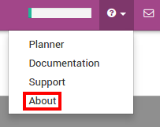
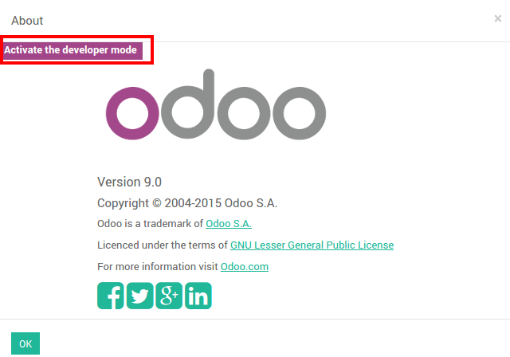
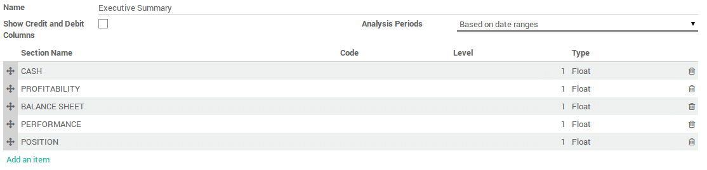
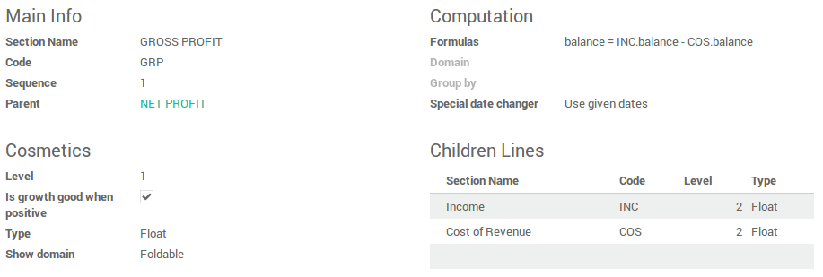

Overview
Odoo 9 comes with a powerful and easy-to-use reporting framework. Creating new reports (such as a tax report or a balance sheet for a specific country) to suit your needs is now easier than ever.
Activate the developer mode
In order to have access to the financial report creation interface, the developer mode needs to be activated. To do that, first click the ? at the top right, then About.
Click on : Activate the developer mode.
Create your financial report
First, you need to create your financial report. To do that, go to
Once the name is filled, there are two other parameters that need to be configured:
- Show Credit and Debit Columns
Analysis Period :
- Based on date ranges (eg Profit and Loss)
- Based on a single date (eg Balance Sheet)
- Based on date ranges with 'older' and 'total' columns and last 3 months (eg. Aged Partner Balances)
- Bases on date ranges and cash basis method (eg Cash Flow Statement)
Add lines in your custom reports
After you've created the report, you need to fill it with lines. They all need a name, a code (that is used to refer to the line), a sequence number and a level (Used for the line rendering).
In the formulas field you can add one or more formulas to assign a value to the balance column (and debit and credit column if applicable – separated by ;)
You have several objects available in the formula :
Ndays: The number of days in the selected period (for reports with a date range).- Another report, referenced by its code. Use
.balanceto get its balance value (also available are.credit,.debitand.amount_residual)
A line can also be based on the sum of account move lines on a selected
domain. In which case you need to fill the domain field with an Odoo
domain on the account move line object. Then an extra object is
available in the formulas field, namely sum, the sum of the account
move lines in the domain. You can also use the group by field to group
the account move lines by one of their columns.
Other useful fields :
- Type : Type of the result of the formula.
- Is growth good when positive : Used when computing the comparison column. Check if growth is good (displayed in green) or not.
- Special date changer : If a specific line in a report should not use the same dates as the rest of the report.
- Show domain : How the domain of a line is displayed. Can be foldable
(
default, hidden at the start but can be unfolded),always(always displayed) ornever(never shown).